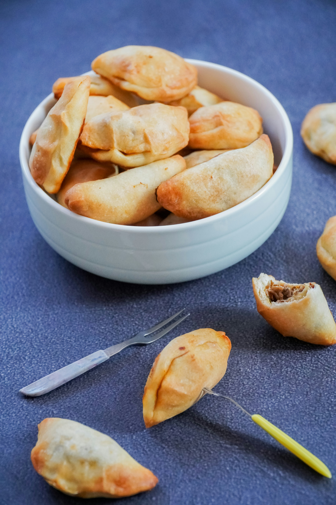

Home
Dumpling Bake

Description
These delicious dumplings are baked to perfection and served with a savory sauce.
Ingredients:
- 2 handfuls fresh spinach
- 1 (13.5 ounce) can coconut milk
- 1/2 (11 ounce) bottle Thai red curry sauce, such as Trader Joe's®
- 3 tablespoons teriyaki sauce
- 2 tablespoons minced garlic, or more to taste
- 14 to 15 pieces frozen gyoza
- crunchy chili oil, for garnish
Steps:
- Preheat the oven to 400 degrees F (200 degrees C).
- Stir coconut milk, red curry sauce, teriyaki sauce, and garlic together in a 9x13-inch baking pan. Scatter spinach evenly on top.
- Arrange gyoza in the baking dish. Use as many as can fit in the dish; up to about 15. Cover with foil.
- Bake in the preheated oven until heated through, about 35 minutes.
- Drizzle with chili crunch before serving.